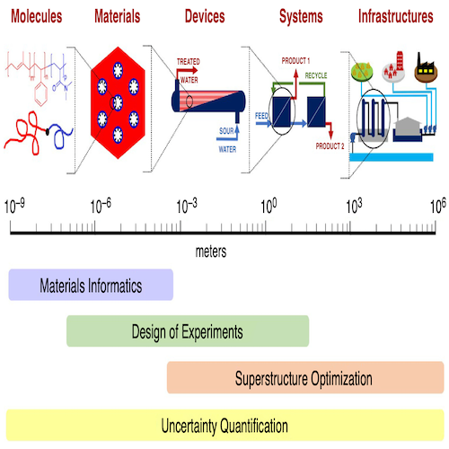
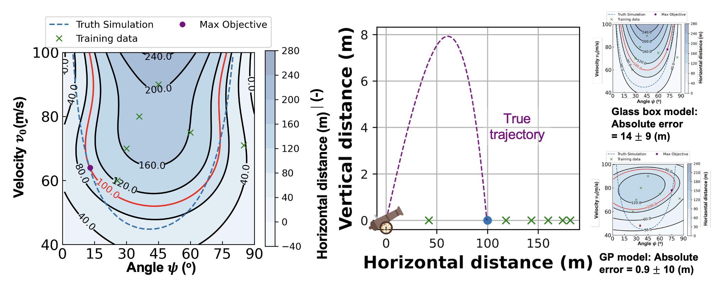
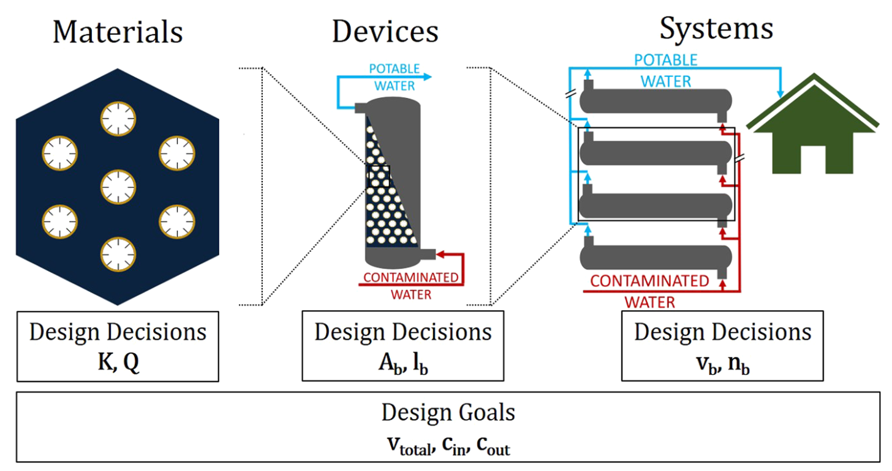

Computational Scientist & Chemical Engineer

I work with data-driven methods to accelerate process design, development, and engineering. Techniques I use include mathematical modeling, nonlinear optimization, nonlinear parameter estimation, machine learning, and Bayesian inference. My research profile and publications can be viewed on my CV, Google Scholar, or ORCID.

I conceptualized and implemented Bayesian hybrid models to make decisions under uncertainty with physics-informed machine learning. These models learn unknown process dynamics directly from (historical) data to optimize system designs. You can read about this work in Learning and optimization under epistemic uncertainty with Bayesian hybrid models. Some of the key data visualizations from this work are listed below.

I benchmarked emerging adsorptive nanomaterials for adsorptive water treatment. I studied their applications for lead remediation and lithium recovery. Read about this work in the paper Material property targets to enable adsorptive water treatment and resource recovery systems. The data visualization and code from this work are listed below.
I am interested in applying mathematics to solve systems design problems. Inverse design of systems based on the interpretation of data or lack thereof pique my curiosity. Applications in the field of pharmaceuticals and sustainability, with a focus on process automation fascinate me.
I love paying it forward by volunteering. I have fond memories of serving as a community tutor and chairing sessions at conferences such as AIChE. If you know of an opportunity like this, let me know!
Take a look at my resume (formatted for industry) or my CV (formatted for academia).